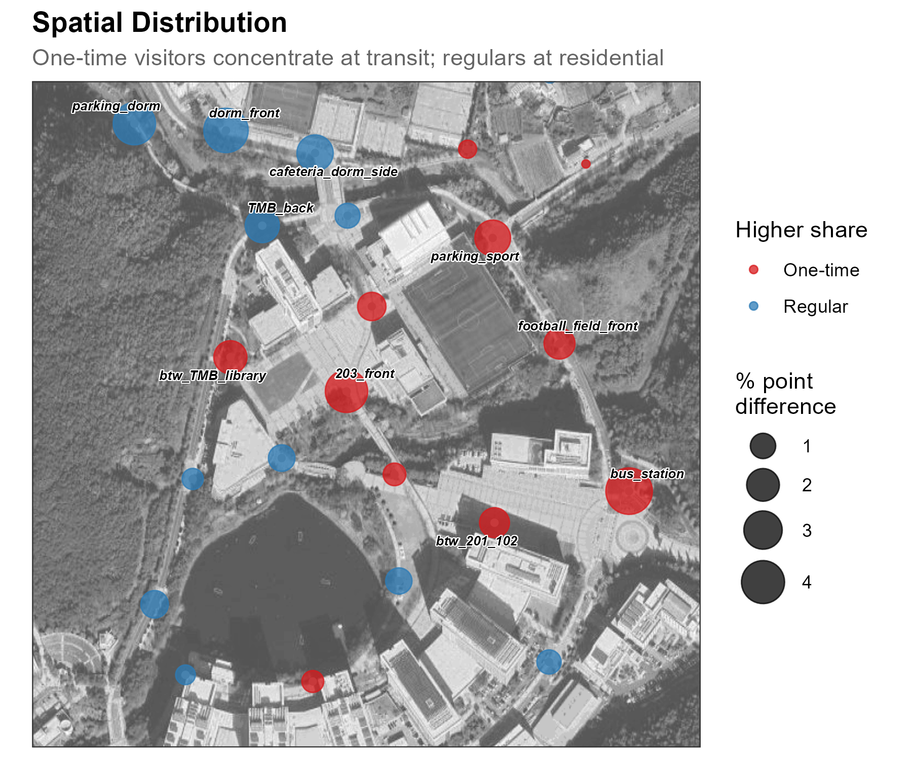
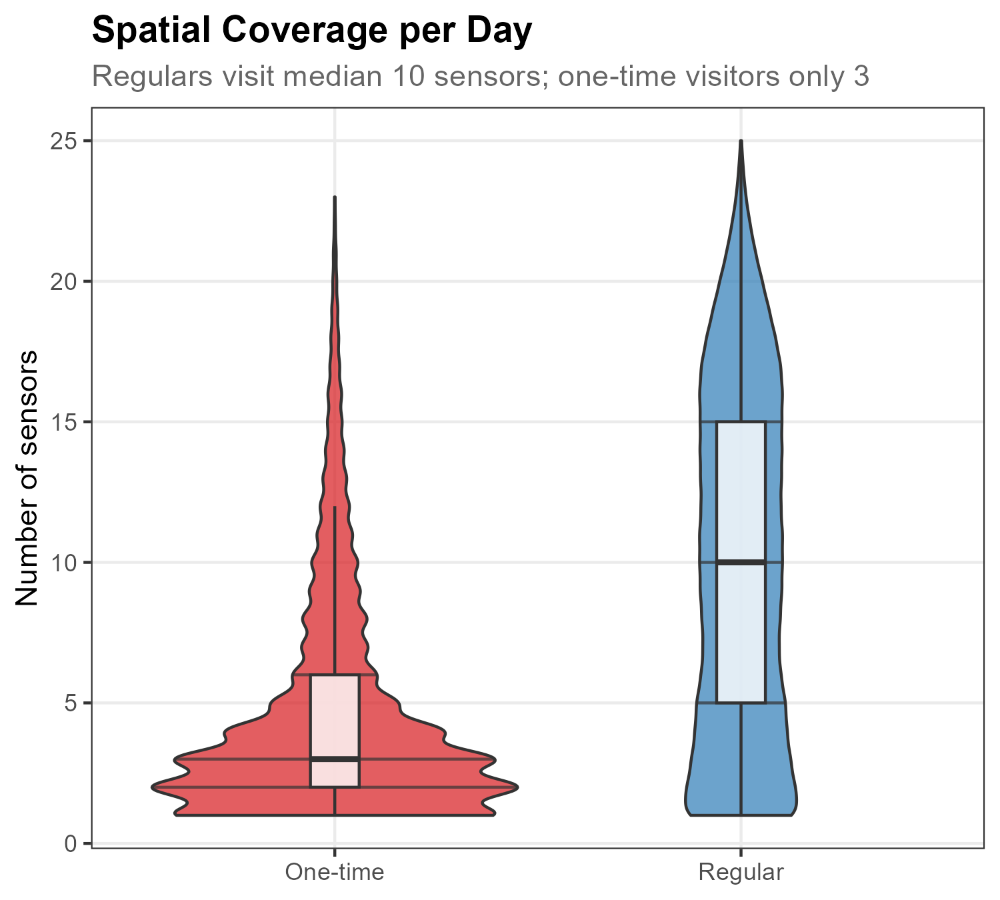

pacman::p_load(tidyverse, lubridate, arrow, sf)10 Identity
While Track reveals where devices go, Identity answers who they are. This chapter shows how to classify detected devices by visit frequency—distinguishing campus regulars from one-time visitors based purely on how often they appear.
The core insight: visit frequency reveals identity. A device detected on 20+ days is likely a resident; one seen only once is probably passing through. If this distinction is meaningful, we should see clear behavioral differences across multiple dimensions: when each group appears, where they concentrate, how widely they range, and how they move through the campus.
10.1 Setup
Prepare data
This chapter uses the same dataset as Count and Track: sample_main.zip. The ZIP contains WiFi detections from a 26-day campus deployment.
NoteAbout the sample dataset
Period: October 21 – November 15, 2019 (26 days) — spanning midterms, a campus interview event, and a school festival.
Location: UNIST campus, Ulsan, South Korea. 25 outdoor sensors covered dormitories, academic buildings, cafeteria, library, gym, and bus station.
Key events during this period:
| Event | Dates | Expected visitors |
|---|---|---|
| Midterm exams | Oct 21-25 | Regular students |
| Campus interview | Nov 1-2 | High school students + parents |
| School festival | Nov 3-5 | Mixed (students + some outsiders) |
The campus interview brings prospective students and their families for tours—a natural experiment for detecting outsiders.
Load packages and data
Load required packages using pacman::p_load(), which installs any missing packages automatically:
Load the data and filter to the 26-day study period:
wifi <- read_parquet("../data/sample_main/wifi.parquet") |>
mutate(date = as_date(timestamp1), hour = hour(timestamp1)) |>
filter(date >= as_date("2019-10-21"), date <= as_date("2019-11-15"))
sensors <- st_read("../data/sample_main/sensors.gpkg", quiet = TRUE)
TipPreview loaded data
head(wifi, 3) timestamp1 source_address sensor_name date hour
1 2019-10-21 00:00:12 a3f7b21e bus_station 2019-10-21 0
2 2019-10-21 00:05:33 a3f7b21e bus_station 2019-10-21 0
3 2019-10-21 00:12:47 c8e42d9a 108_front_outside 2019-10-21 0timestamp1: Detection timestampsource_address: SHA-256 hashed device identifier (first 8 characters)sensor_name: Which sensor detected this devicedate: Date extracted from timestamphour: Hour of day (0–23)
10.2 Classify by Visit Frequency
WiFi sensors detect every device that broadcasts a probe request—residents, commuters, delivery drivers, and one-time visitors alike. To distinguish these populations, we use the simplest available signal: how many of the 26 deployment days each device was observed. A device seen on a single day is likely passing through; one detected on 20+ days is almost certainly a campus regular.
Classify devices
We count the number of unique days per device. The resulting distribution is sharply long-tailed: over half of all devices (54%) appear on just a single day, while only 14% persist for 20+ days. Based on this natural structure, we define three categories—One-time (1 day), Occasional (2–19 days), and Regular (20+ days)—and join the labels back to the detection data.
device_days <- wifi |>
group_by(source_address) |>
summarise(n_days = n_distinct(date)) |>
mutate(freq_type = case_when(
n_days == 1 ~ "One-time",
n_days >= 20 ~ "Regular",
TRUE ~ "Occasional"
))
wifi <- wifi |>
left_join(device_days |> select(source_address, freq_type), by = "source_address")# A tibble: 3 x 2
freq_type n
<chr> <int>
1 One-time 13354
2 Occasional 7874
3 Regular 3444
Show code
dist_data <- count(device_days, n_days) |>
mutate(freq_group = factor(
case_when(n_days == 1 ~ "One-time", n_days >= 20 ~ "Regular", TRUE ~ "Occasional"),
levels = c("One-time", "Occasional", "Regular")
))
ggplot(dist_data, aes(n_days, n, fill = freq_group)) +
geom_col(width = 0.8) +
scale_fill_manual(
values = c("One-time" = "#d7191c", "Occasional" = "gray55", "Regular" = "#2c7bb6"),
name = NULL) +
scale_x_continuous(breaks = c(1, 5, 10, 15, 20, 26)) +
scale_y_continuous(labels = scales::comma, expand = expansion(mult = c(0, 0.12))) +
labs(title = "Distribution of Visit Frequency",
subtitle = "Most devices appear once; 14% persist for 20+ days",
x = "Days Observed", y = NULL) +
theme_bw()Now we compare the two extremes—One-time vs Regular—across three behavioral dimensions: temporal patterns, spatial patterns, and movement flows.
10.3 Behavioral Differences
Temporal pattern
One-time visitors cluster tightly around midday (peaking at ~10% of their devices at noon), concentrated within business hours. Regulars, by contrast, spread evenly across the full 24 hours at ~5% per hour—a flat profile reflecting on-campus residents who are detectable even at night.

Show code
wifi_freq <- wifi |> filter(freq_type %in% c("One-time", "Regular"))
h_freq <- wifi_freq |>
group_by(freq_type, hour) |>
summarise(n = n_distinct(source_address), .groups = "drop") |>
group_by(freq_type) |>
mutate(pct = n / sum(n) * 100)
ggplot(h_freq, aes(hour, pct, color = freq_type)) +
geom_line(linewidth = 0.8) + geom_point(size = 1.8) +
scale_x_continuous(breaks = c(0, 4, 8, 12, 16, 20, 23),
labels = c("0AM", "4", "8", "12PM", "16", "20", "23")) +
scale_y_continuous(breaks = seq(2, 10, 2)) +
scale_color_manual(values = c("One-time" = "#d7191c", "Regular" = "#2c7bb6"), name = NULL) +
labs(title = "Hourly Detection Rates",
subtitle = "One-time visitors peak at midday; regulars spread evenly",
x = NULL, y = "%") +
theme_bw()Spatial pattern
The difference map reveals a clear spatial divide. One-time visitors over-index at transit-oriented locations—bus_station (+4.8 pp), 203_front (+3.9 pp), and parking_sport (+2.5 pp)—all campus entry points or building fronts suited to brief visits. Regulars dominate residential and daily-life sensors: dorm_front (+4.3 pp), parking_dorm (+3.8 pp), and cafeteria_dorm_side (+2.6 pp). The map effectively separates “passing through” locations from “living here” locations.

Show code
s_freq_wide <- wifi_freq |>
count(freq_type, sensor_name) |>
group_by(freq_type) |>
mutate(pct = n / sum(n) * 100) |>
ungroup() |>
select(freq_type, sensor_name, pct) |>
pivot_wider(names_from = freq_type, values_from = pct, values_fill = 0) |>
rename(pct_onetime = `One-time`, pct_regular = Regular) |>
mutate(diff = pct_onetime - pct_regular,
abs_diff = abs(diff),
dominant = if_else(diff > 0, "One-time", "Regular")) |>
left_join(sensor_coords, by = "sensor_name")
ggmap(base_map, darken = c(0.3, "white")) +
geom_point(data = sensor_coords, aes(x = X, y = Y),
size = 1.2, color = "grey60", inherit.aes = FALSE) +
geom_point(data = s_freq_wide, aes(x = X, y = Y, size = abs_diff, color = dominant),
alpha = 0.75, inherit.aes = FALSE) +
scale_size_continuous(range = c(1.5, 10), name = "% point\ndifference") +
scale_color_manual(values = c("One-time" = "#d7191c", "Regular" = "#2c7bb6"),
name = "Higher share") +
labs(title = "Spatial Distribution",
subtitle = "One-time visitors concentrate at transit; regulars at residential") +
theme_bw()Spatial coverage
Beyond where devices go, we can ask how widely they range. On each visit (device-day), we count how many distinct sensors detected the device. Regulars visit a median of 10 sensors per day with a long upper tail; one-time visitors visit only 3, tightly clustered near the minimum. This coverage gap reflects fundamentally different engagement with the campus—regulars traverse multiple zones (dormitory, cafeteria, academic buildings, recreation) while one-time visitors touch only a handful of sensors near entry points.

Show code
visit_stats <- wifi_freq |>
group_by(source_address, date, freq_type) |>
summarise(
n_sensors = n_distinct(sensor_name),
.groups = "drop"
)
ggplot(visit_stats, aes(x = freq_type, y = n_sensors, fill = freq_type)) +
geom_violin(alpha = 0.7, draw_quantiles = c(0.25, 0.5, 0.75)) +
geom_boxplot(width = 0.12, fill = "white", alpha = 0.8, outlier.shape = NA) +
scale_fill_manual(values = c("One-time" = "#d7191c", "Regular" = "#2c7bb6")) +
scale_y_continuous(breaks = seq(0, 25, 5)) +
labs(title = "Spatial Coverage per Day",
subtitle = "Regulars visit median 10 sensors; one-time visitors only 3",
x = NULL, y = "Number of sensors") +
theme_bw() +
theme(legend.position = "none")Movement pattern
Both groups share cafeteria_dorm_side → TMB_back as their top route, but regulars generate 10× more volume (11,063 vs 1,076 trips). One-time visitors’ flows are transit-oriented—two of their top seven routes end at bus_station, tracing an arrival-visit-departure arc. Regulars show campus-life patterns: multiple routes to TMB_back (research building) and two routes to the lake (recreation), destinations one-time visitors rarely reach.

Show code
od_freq <- wifi_freq |>
arrange(source_address, timestamp1) |>
group_by(source_address) |>
mutate(gap = as.numeric(difftime(timestamp1, lag(timestamp1), units = "mins")),
trip_id = cumsum(is.na(gap) | gap > 30)) |>
group_by(source_address, trip_id, freq_type) |>
summarise(origin = first(sensor_name), destination = last(sensor_name),
n_det = n(), .groups = "drop") |>
filter(origin != destination, n_det >= 2) |>
count(freq_type, origin, destination, name = "n_trips") |>
group_by(freq_type) |>
slice_max(n_trips, n = 7) |>
ungroup()
# Join coordinates and plot as flow map with geom_curve
edges_freq <- od_freq |>
left_join(sensor_coords, by = c("origin" = "sensor_name")) |>
rename(x_from = X, y_from = Y) |>
left_join(sensor_coords, by = c("destination" = "sensor_name")) |>
rename(x_to = X, y_to = Y)
ggmap(base_map, darken = c(0.3, "white")) +
geom_curve(data = edges_freq,
aes(x = x_from, y = y_from, xend = x_to, yend = y_to,
linewidth = n_trips, color = freq_type),
curvature = 0.25, alpha = 0.8,
arrow = arrow(length = unit(0.18, "cm"), type = "closed"),
inherit.aes = FALSE) +
facet_wrap(~ freq_type) +
labs(title = "Primary Movement Corridors",
subtitle = "Both groups share main routes; regulars dominate dormitory paths") +
theme_bw()